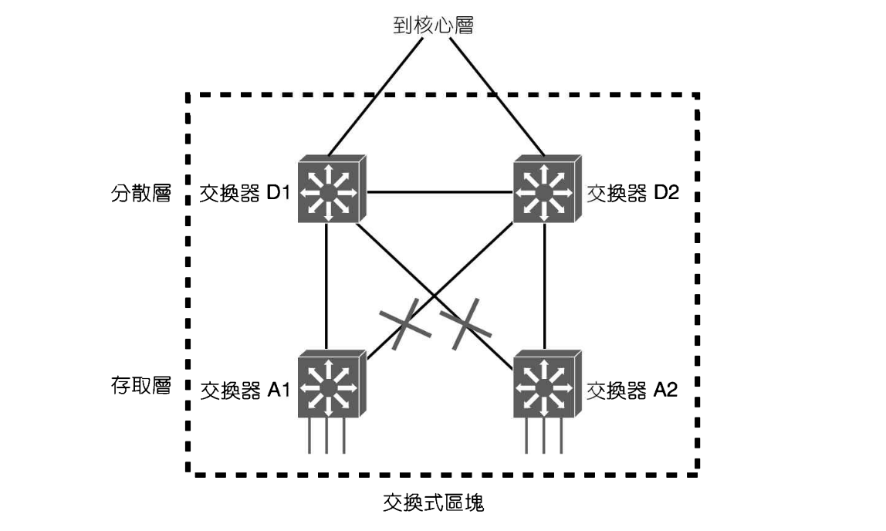
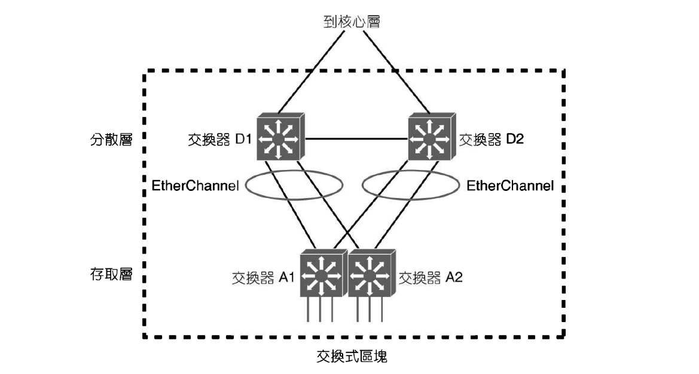
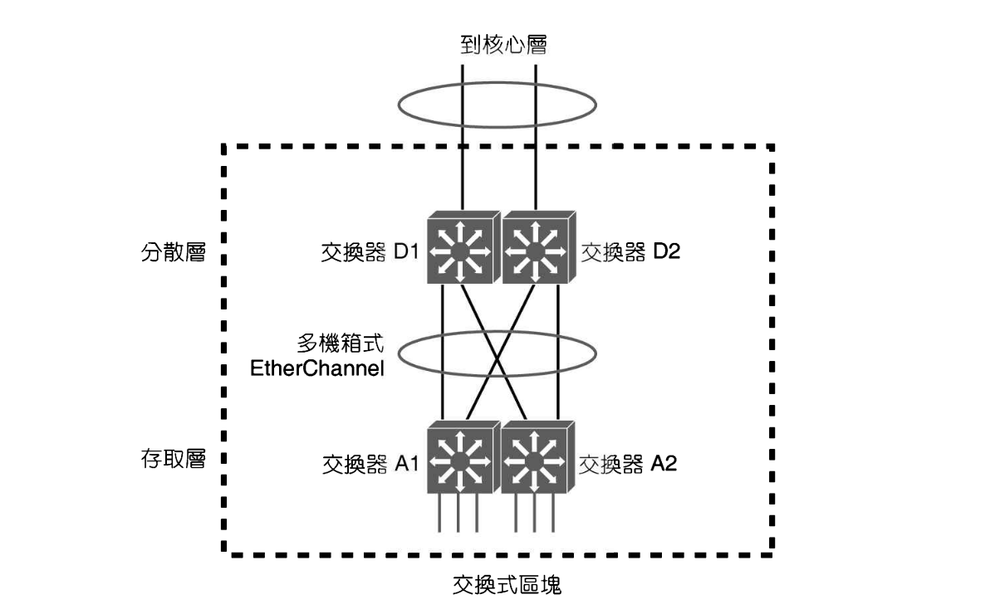
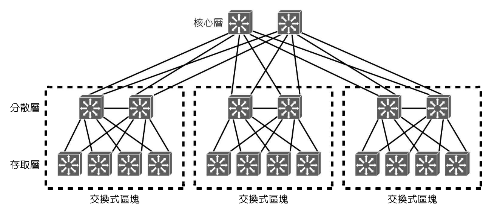
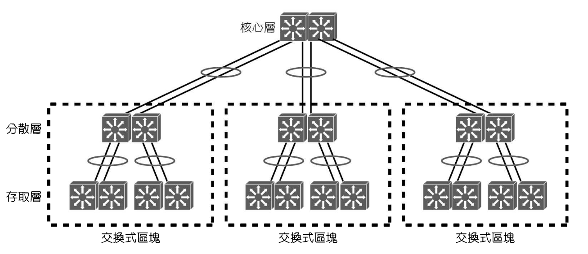
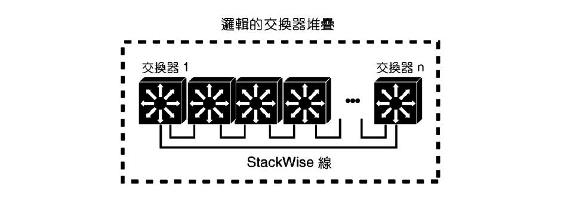
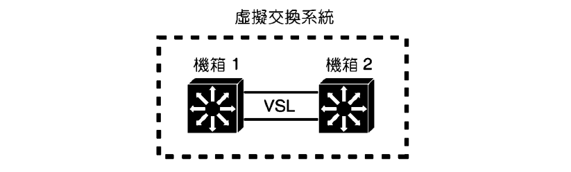
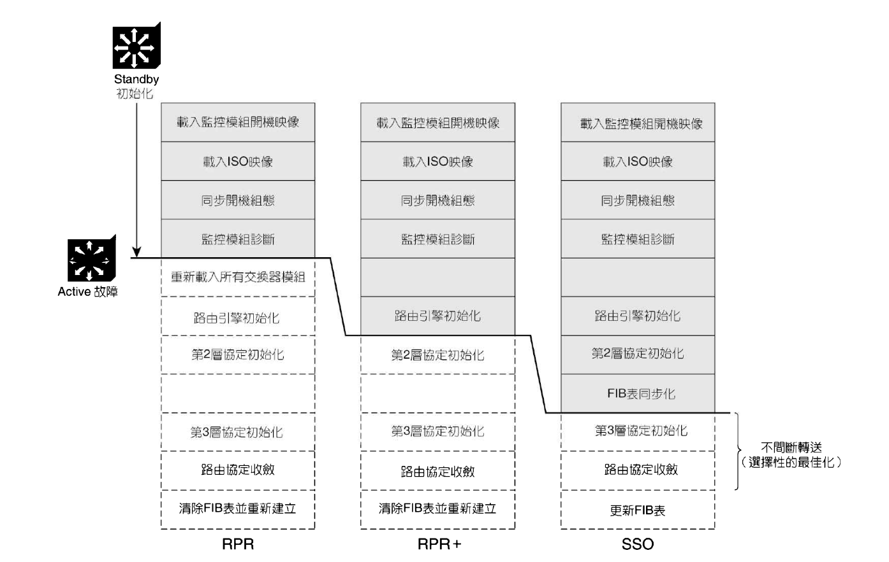
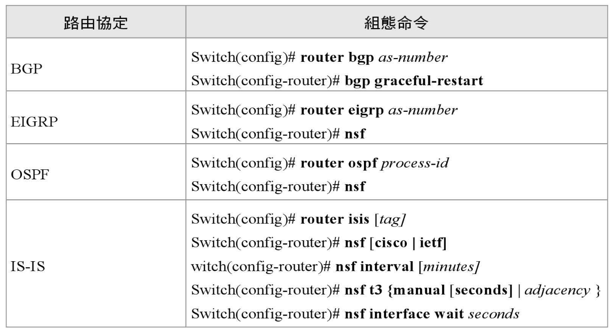

- 首頁
- 大二
- 大三
- 大四
- 英語相關
- 網路相關
- LAN Design
- Layer 2
- Layer 3
- HA
Layer 2 HA
EtherChannel
使多台交換器扮演一台邏輯交換器
典型備援網路設計
STP 會將某些備援鏈路進入 Blocking 模式，以防止迴圈。雖然這樣的網路保有備援性質，但並非啟用了所有的備援鏈路來轉送流量

成對的交換器雖然提供彼此交換的備援性，可是僅在分散層與核心層才有，成對的存取層交換器彼此並未提供備援。
獨立的存取層交換器間通常沒有直連的鏈路存在，因此每一台存取層交換器應該要替終端使用者支援不同的 VLAN
存取層邏輯交換器
將兩台備援的實體交換器變成一台邏輯的交換器。將數條備援鏈路組成一個 EtherChannel，擺脫 STP 防止迴圈與封鎖鏈路的依賴

一台邏輯存取層交換器也允許使用單一的 VLAN 來支援使用者
分散層邏輯交換器
網路架構已經簡化成兩台邏輯交換器，中間使用一條 EtherChannel 連接，所有鏈路都可以同時使用，即使有一條以上的鏈路失敗，還有其他的 EtherChannel 可以提供服務

核心層邏輯交換器


建立邏輯交換器
StackWise
為了建立邏輯交換器，每個實體交換器必須採用特殊的堆疊線來連接彼此。每台交換器支援兩個堆疊埠，以「菊鍊」的方式一台連接著一台，最後一台將這個「鍊子」圍起來。菊鍊最多可以將 9 台實體交換器連結成一個封閉環狀

- 個別交換器加入或抽離，不會破壞交換器之間的路徑，換句話說，改變了堆疊也不會中斷連線
- 當形成堆疊時，每個交換器仍維持著交換功能，但僅有一台交換器會成為堆疊主機並執行所有的管理功能，當主機故障時，其他的交換器才會接替其角色
虛擬交換系統
Cisco 的機箱式交換器包含多個交換模組的插槽，可以設定兩個一樣的機箱來擔任一台邏輯交換器，其中一個機箱的監控模組負責控制邏輯交換器的運作，該系統稱為「虛擬交換系統」(Virtual Switching System, VSS)，通常簡稱為「VSS配對」
為了建立邏輯交換器，兩個機箱必須透過設定為虛擬交換器鏈路(VSL)的多重介面連接在一起

備援交換器監控模組
在某些交換器平台中，可以在同一個機箱中安裝兩個監控模組(supervise module)。最先啟動的監控模組成為 active 角色，另一個則為 standby 角色，以防 active 監控模組出現問題。
- active 模組永遠都是啟動的狀態、完全的初始化，並具備所有功能。所有交換功能都是由 active 監控模組提供。
- standby 模組可以啟動，但是只能初始化到某種程度，active 故障時，standby 將初始化其他功能，並接手 active 的角色
備援模式

備援模式決定了這兩個監控模組如何交握與同步資訊，也決定了 standby 的準備就緒程度。standby 準備就緒程度越高，所需的初始化和故障切換時間就越快：
- 路由處理器備援 (RPR, Router Processor Redundency)
- 備援模組沒有完全啟動與初始化
- active 故障時，standby 需重啟其他所有模組，然後初始化所有監控模組
- 增強型路由處理器備援 (RPR+, RPR Plus)
- 備援模組已經啟動
- 允許監控模組和路由引擎進行初始化，但尚未啟用 L2 與 L3 功能
- active 故障時，無須重啟其他交換器模組，standby 模組就能完成初始化，讓交換埠保持原來的狀態
- 有狀態故障切換 (SSO, Stateful Switchover)
- 備援模組完全啟動與初始化
- startup config 與 running config 在監控模組之間同步
- 兩者都維護 L2 的資訊
| 備援模式 | 故障切換時間 |
|---|---|
| RPR | >2min |
| RPR+ | >30s |
| SSO | >1s |
設定
redundancy > mode {rpr | rpr-plus | sso}
- 首次設定，必須在兩個監控模組上輸入上述指令。
- 備援模式啟用後，只須在 active 監控模組上設定，standby 會自動同步組態
檢驗：
show redundancy status
設定同步資訊
redundancy > main-cpu > auto-sync {startup-config | config-register | bootvar}
恢復預設值：auto-sync standard
不間斷轉送
使用 SSO 時，可以啟用另一項備援功能：不間斷轉送(NSF, Non-Stop Forwarding)。
不間斷轉送是一種互動方法，旨在切換監控模組後快速重建路徑資訊資料庫(RIB)，RIB 用於產生供 CEF 使用的轉送訊息資料庫(FIB)，然後 FIB 被下載到能夠執行 Cisco 快速轉送 (CEF) 的所有交換器模組或硬體中。(詳參：CEF)
路由器可以使用 NSF 來獲得其他支援 NSF 鄰居的協助。鄰居將路徑資訊提供給 standby 模組，不必等待路徑收斂與重建 FIB，使得路由表可以快速建立。
常見的路由協定都支援 NSF：
